from jax import numpy as jnp
from jax import randomLearning consumption rules
Learning consumption rules
This exercise is inspired from Individual learning about consumption by Todd Allen and Chris Carroll link and from Deep Learning for Solving Economic models by Maliar, Maliar and Winant link
We consider the following consumption saving problem. An agent receives random income \(y_t = \exp(\epsilon_t)\) where \(\epsilon_t\sim \mathcal{N}(\sigma)\) (\(\sigma\) is the standard deviation.)
Consumer starts the period with available income \(w_t\). The law of motion for available income is:
\[w_t = \exp(\epsilon_t) + (w_{t-1}-c_{t-1}) r\]
where consumption \(c_t \in ]0,w_t]\) is chosen in each period in order to maximize:
\[E_t \sum_{t=0}^T \beta^t U(c_t)\]
given initial available income \(w_0\).
In the questions below, we will use the following calibration:
- \(\beta = 0.9\)
- \(\sigma = 0.1\)
- \(T=100\)
- \(U(x) = \frac{x^{1-\gamma}}{1-\gamma}\) with \(\gamma=4\)
- \(w_0 = 1.1\) (alternatively, consider values 0.5 and 1)
The theoretical solution to this problem is a concave function \(\varphi\) such that \(\varphi(x)\in ]0,x]\) and \(\forall t, c_t=\varphi(w_t)\). Qualitatively, agents accumulate savings, up to a certain point (a buffer stock), beyond which wealth is not increasing any more (in expectation).
Carroll and Allen have noticed that the true solution can be approximated very well by a simple rule:
\[\psi(x) = \min(x, \theta_0 + \theta_1 (x - \theta_0) )\]
The main question they ask in the aforementioned paper is whether it is realistic that agents would learn good values of \(\theta_0\) and \(\theta_1\) by observing past experiences.
We would like to examine this result by learning the optimal rule using stochastic gradient descent.
In the whole notebook, we use JAX to perform the calculations.
Exercise 1 Define a class to represent the parameter values
from dataclasses import dataclass@dataclass
class Model:
β=0.9
σ=0.1
γ=4.0
r=1.04
T=100
# def U(self, x):
# return
# -> we have tweaked the parameters a little bit so
# so that the graphs below look nicerm = Model()# we can also simply represent the model as a dictionary
# this represetation is useful here since it is compatible with jax JIT
p = dict(β=0.9,σ=0.1,γ=4.0,r=1.04)Exercise 2 Define simple rule fonction consumption(w: float, θ_0:float, θ_1:float, p:Model)->float which compute consumption using a simple rule. What is the meaning of \(\theta_0\) and \(\theta_1\)? Make a plot in the space \(w,c\), including consumption rule and the line where \(w_{t+1} = w_t\). Check that it works when w is a JAX vector.
def consumption(w: float, a: float, b: float, p):
r = a + b*(w-a)
if w<r:
return w
else:
return r# this version works for basic python types
consumption(2.0, 0.9, 0.1, m)1.01# to work with vectorized arguments we need to use
# numpy or jax constructs
def consumption(w, a, b, p):
return jnp.minimum(w, a + b*(w-a))wvec = jnp.linspace(0,2,100)
θ_0 = 1.0
θ_1 = 0.05
cvec = consumption(wvec, θ_0, θ_1, m)# let's visualize the result
from matplotlib import pyplot as plt
plt.plot(wvec, cvec)
plt.plot(wvec, wvec, color='black', linestyle='--')
plt.xlabel("$w_t$")
plt.ylabel("$c_t$")Text(0, 0.5, '$c_t$')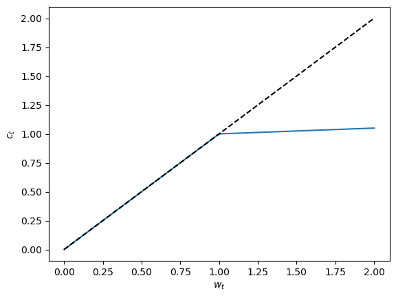
Exercise 3 Write a function lifetime_reward(w_0: float, θ_0: float, θ_1: float, p:Model, key, T)->float which computes one realization of \(\sum_{t=0}^T \beta^t U(c_t)\) for initial wealth w_0 and simple rule θ_0, θ_1 and random key key. Mathematically, we denote it by \(\xi(\omega; \theta_0, \theta_1)\), where \(\omega\) represents the succession of random income draws. Check the result is unchanged, when the result is computed from the same original key.
Can you JIT compile the resulting fonction? What is the gain of using a native JAX loop?
(hint: to use native loop, T needs to be treated as a constant parameter)
def lifetime_reward_unrolled(w_0, θ_0, θ_1, p, key, T=100):
V = 0.0
w = w_0
γ = p['γ']
β = p['β']
σ = p['σ']
r = p['r']
for t in range(T):
c = consumption(w, θ_0, θ_1, p)
U = c**(1-γ)/(1-γ)
V += β**t*U
y = jnp.exp(
random.normal(key)*σ
)
w = y + (w-c)*r
subkey, _ = random.split(key)
return Vkey0 = random.key(1)
lifetime_reward_unrolled(1.0, 0.6, 0.04, p, key0, T=100)Array(-9.912475, dtype=float32)# we can compile the resulting function
from jax import jit
lru = jit(lifetime_reward_unrolled, static_argnames=['T'])lru(2.0, 0.6, 0.05, p, key0, T=100)Array(-7.6541395, dtype=float32)%timeit lifetime_reward_unrolled(2.0, 1.0, 0.05, p, key0, T=100)18.5 ms ± 513 μs per loop (mean ± std. dev. of 7 runs, 100 loops each)%timeit lru(2.0, 1.0, 0.05, p, key0, T=100)
# this can to to MUCH faster evaluation (especially for large T)20.2 μs ± 48.4 ns per loop (mean ± std. dev. of 7 runs, 10,000 loops each)# hover in the lifetime_unrolled function above, jax doesn't
# actually exploit the loop structure because it uses a python
# range construct. instead it generates a code that essentially
# pastes the loop content 100 times.
# this can work for small loops but can be very inefficient when the
# loop grows larger
# lru(2.0, 1.0, 0.05, p, key0, T=10000) -> bad idea# we can instead use a loop construct
# see jax documentation
from jax import lax
def lifetime_reward(w_0, θ_0, θ_1, p, key, T=100):
V = 0.0
w = w_0
γ = p['γ']
β = p['β']
σ = p['σ']
r = p['r']
def loop_body(t, arg):
w, V = arg
c = consumption(w, θ_0, θ_1, p)
U = c**(1-γ)/(1-γ)
V1 = V + β**t*U
y = jnp.exp(random.normal(key)*σ)
w1 = y + (w-c)*r
subkey, _ = random.split(key)
return (w1, V1)
w_, V_ = lax.fori_loop(0, T, loop_body, (w_0, 0.0))
return V_
lifetime_reward(2.0, 0.5, 0.05, p, key0, T=100)Array(-10.406765, dtype=float32, weak_type=True)lifetime_reward(2.0, 1.01, 0.04, p, key0, T=100)Array(-3.6886592, dtype=float32, weak_type=True)# again this version can be compiled
lr = jit(lifetime_reward, static_argnames=['T'])# let's compare the timings for big loops
%timeit lr(2.0, 1.0, 0.05, p, key0, T=1000)47.2 μs ± 63 ns per loop (mean ± std. dev. of 7 runs, 10,000 loops each)%timeit lru(2.0, 1.0, 0.05, p, key0, T=1000)The slowest run took 11.56 times longer than the fastest. This could mean that an intermediate result is being cached.
141 μs ± 183 μs per loop (mean ± std. dev. of 7 runs, 1 loop each)vec = jnp.linspace(0.6, 2.0, 1000)
yvec = [lr(2.0, h, 0.04, p, key0, T=100) for h in vec]
plt.plot(vec, yvec)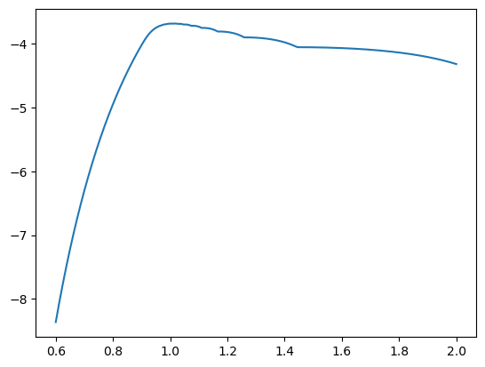
Exercise 4 Write a function lifetime_reward(w_0: float, θ_0: float, θ_1: float, p:Model, key, N, T)->float which computes expected lifetime reward using N Monte-Carlo draws. Mathematically, we write it \(\Xi^{N}(\theta_0, \theta_1) =\frac{1}{N} \sum_1^N {\xi(\omega_N; \theta_0, \theta_1)}\). Check empirically that standard deviation of these draws decrease proportionally to \(\frac{1}{\sqrt{N}}\) .
import jax
def expected_lifetime_reward(w_0, θ_0, θ_1, p, key, T=100, N=100):
vlr = jax.vmap(
lambda w, key: lr(w, θ_0, θ_1, p, key, T=T),
)
wvec = jnp.repeat(w_0, N)
keys = random.split(key, N)
return vlr(wvec, keys).mean()%time expected_lifetime_reward(2.0,0.6, 0.05, p, key0, T=100)CPU times: user 529 ms, sys: 9.02 ms, total: 538 ms
Wall time: 527 msArray(-6.8929925, dtype=float32)elr = jit(expected_lifetime_reward)
elr(2.0, 1.0, 0.05, p, key0, T=100);/home/pablo/.local/opt/micromamba/envs/bbank/lib/python3.11/site-packages/jax/_src/core.py:691: FutureWarning: unhashable type: <class 'jax._src.interpreters.partial_eval.DynamicJaxprTracer'>. Attempting to hash a tracer will lead to an error in a future JAX release.
warnings.warn(
/home/pablo/.local/opt/micromamba/envs/bbank/lib/python3.11/site-packages/jax/_src/core.py:691: FutureWarning: unhashable type: <class 'jax._src.interpreters.partial_eval.DynamicJaxprTracer'>. Attempting to hash a tracer will lead to an error in a future JAX release.
warnings.warn(# again, the compiled version is much faster
%time elr(2.0, 1.0, 0.05, p, key0, T=100)CPU times: user 2.02 ms, sys: 21 μs, total: 2.04 ms
Wall time: 1.48 msArray(-3.0192175, dtype=float32)Exercise 5 Using a high enough number for N, compute optimal values for \(\theta_0\) and \(\theta_1\). What is the matching value for the objective function converted into an equivalent stream of deterministic consumption ? That is if V is the approximated value computed above, what is \(\bar{c}\in R\) such that \(V= \sum_{t=0}^T \beta^t U(\bar{c})\) ?
K = 100
t0_vec = jnp.linspace(0.5, 4.0, K)
t1_vec = jnp.linspace(0.0, 0.4, K)t0_ = t0_vec[:,None].repeat(K,axis=1).ravel()
t1_ = t1_vec[None,:].repeat(K,axis=0).ravel()
# This is a mesh ( the lines of np.column_stack([t0_,t1_]) contain all possible combinations of t0 and t1
# we compute random keys for each point of the meshp = dict(β=0.9,σ=0.1,γ=4.0,r=1.04)w_0_ = 2.0
N = 1000 # this needs to be rather large for the plot to be smooth
keys = random.split(key0, K*K)
vals = jax.vmap(
lambda t0, t1, key: expected_lifetime_reward(w_0_, t0, t1, p, key, T=100, N=N)
)(
t0_, t1_, keys
)vals = vals.reshape((K,K))# we can represent the values as a heatmap
import matplotlib.pyplot as plt
import numpy as np
plt.contourf(
np.array(vals.T),
origin='lower',
extent=(t0_vec.min(), t0_vec.max(), t1_vec.min(), t1_vec.max()),
# vmin=-11,
# levels=np.linspace(-15, -9, 40),
)
plt.colorbar()
plt.title("Lifetime Reward")Text(0.5, 1.0, 'Lifetime Reward')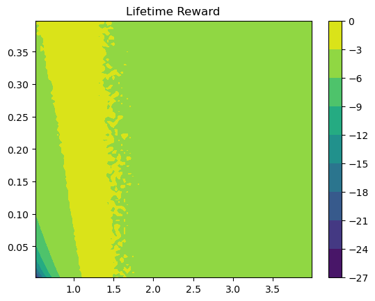
# for a more insightful plot, we can convert into consumption equivalents
cvals = (vals*(1-p['γ']))**(1/(1-p['γ']))
# let's normalize as % loss from the maximum
cvals_loss = ((cvals.max()-cvals)/cvals.max())cvalsArray([[0.2320815 , 0.24623036, 0.25717124, ..., 0.4804254 , 0.482437 ,
0.47948226],
[0.24849133, 0.26192278, 0.27280337, ..., 0.47907487, 0.4808672 ,
0.47883892],
[0.26490113, 0.27778888, 0.2879123 , ..., 0.48178297, 0.4817273 ,
0.48342937],
...,
[0.47022584, 0.4712539 , 0.47367927, ..., 0.4723089 , 0.4723742 ,
0.47379422],
[0.4712465 , 0.47158557, 0.47210145, ..., 0.46918964, 0.47077164,
0.47395906],
[0.47214964, 0.47252044, 0.471062 , ..., 0.4686527 , 0.4717124 ,
0.47336236]], dtype=float32)# we can represent the values as a heatmap
import matplotlib.pyplot as plt
import numpy as np
plt.contourf(
np.array(cvals.T),
origin='lower',
extent=(t0_vec.min(), t0_vec.max(), t1_vec.min(), t1_vec.max()),
# levels=[0.104 0.112]
)
plt.colorbar()
plt.title("Lifetime Reward (consumption equivalent)")Text(0.5, 1.0, 'Lifetime Reward (consumption equivalent)')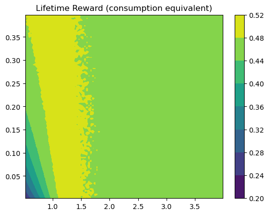
Exercise 6 Using a high enough number for N, make contour plots of lifetime rewards as a function of θ_0 and θ_1. Ideally, represent lines with \(1\%\) consumption loss, \(5\%\) and \(10\%\) deterministic consumption loss w.r.t. to maximum.
# we can add the contour lines on the same plot
#
levels=[0, 0.01, 0.05, 0.1]
import matplotlib.pyplot as plt
import numpy as np
plt.contourf(
np.array(cvals_loss.T),
origin='lower',
extent=(t0_vec.min(), t0_vec.max(), t1_vec.min(), t1_vec.max()),
levels=levels
)
plt.contour(
np.array(cvals_loss.T),
origin='lower',
extent=(t0_vec.min(), t0_vec.max(), t1_vec.min(), t1_vec.max()),
levels=levels,
colors='black'
)
plt.colorbar()
plt.title("Lifetime Reward (% deviation from maximum)")Text(0.5, 1.0, 'Lifetime Reward (% deviation from maximum)')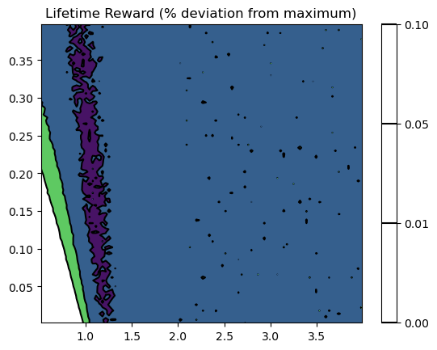
Learning to save
We now focus on the number of steps it takes to optimize \(\theta_0\), \(\theta_1\).__
Exercise 7 Implement a function ∇(θ:Vector, T, N)::Vector which computes the gradient of the objective w.r.t. θ==[θ_0,θ_1]__
def grad(θ, key, T=100, N=10):
fun = lambda t: expected_lifetime_reward(w_0_, t[0], t[1], p, key, T=100, N=N)
g = jax.grad(fun)(θ)
return gv0 = jnp.array([1.0, 0.0])
grad(v0, key0)Array([ 8.861146, 14.778807], dtype=float32)Exercise 8 Implement a gradient descent algorithm to maximize \(\Xi^N(\theta_0, \theta_1)\) using learning rate \(\lambda \in ]0,1]\). Stop after a predefined number of iterations. Compare convergence speed for different values of \(\lambda\) and plot them on the \(\theta_0, \theta_1\) plan. How many steps does it take to enter the 1% error zone? The 5% and the 10% error zone?
# let's define an objective function (to minimize) that returns the value and the gradient
def fobj(θ, key, T=100, N=10):
def fun(t):
v = expected_lifetime_reward(w_0_, t[0], t[1], p, key, T=T, N=N)
# convert into consumption equivalent
c = (v*(1-p['γ']))**(1/(1-p['γ']))
return c
# g = jax.grad(fun)
# return fun(theta), g(theta)
# instead of the commented code above we can return at once the gradient and the value with:
return jax.value_and_grad(fun)(θ)fobj_jitted = jit(fobj, static_argnames=['N'])%time fobj_jitted(v0, key0, N=100)CPU times: user 298 ms, sys: 13.9 ms, total: 312 ms
Wall time: 299 ms(Array(0.46036172, dtype=float32),
Array([0.35756832, 0.7256772 ], dtype=float32))from tqdm.notebook import tqdmv0 = jnp.array([1.0, 0.00])# let's write a naive code
λ = 0.01
M = 5000 # total number of training steps
v = v0.copy()
key = key0.copy()
values = []
guesses = []
for m in tqdm(range(M)):
key, _ = random.split(key)
f, df = fobj_jitted(v, key, N=N)
# print(f)
guesses.append(v)
values.append(f)
# update guess
v = v+λ*df # maximize with gradient ascent# convergenced is obtained rather quickly (note the log x-scale)
fig, ax = plt.subplots()
ax.plot(values)
ax.set_xscale("log")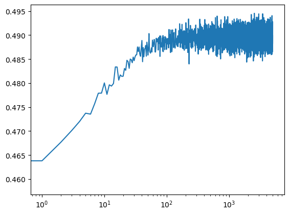
# we can also represent the convergence on a heatmap
import matplotlib.pyplot as plt
import numpy as np
levels=[0, 0.01, 0.05, 0.1]
plt.contourf(
np.array(cvals_loss.T),
origin='lower',
extent=(t0_vec.min(), t0_vec.max(), t1_vec.min(), t1_vec.max()),
# extent=(t1_vec.min(), t1_vec.max(), t0_vec.min(), t0_vec.max()),
# levels=np.linspace(0.,0.5,20)
levels=levels
# levels=[-3,-2,-1.0,-0.5,-0.4,-0.3,-0.2,-0.1, -0.05]
)
# plt.plot([e[1] for e in guesses], [e[0] for e in guesses], '.')
plt.plot([e[0] for e in guesses], [e[1] for e in guesses], '.', markersize=0.5, color='red')
plt.colorbar()
plt.title("Lifetime Reward: Convergence of Gradient Ascent")
# plt.plot([v[0]], [v[1]],'o')Text(0.5, 1.0, 'Lifetime Reward: Convergence of Gradient Ascent')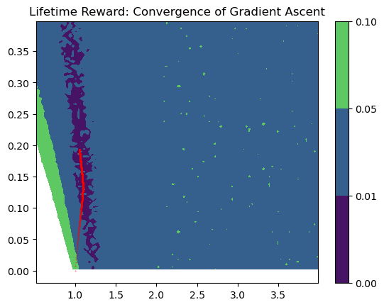
# let's visualize the result
c_learned = consumption(wvec, v[0], v[1], p)
from matplotlib import pyplot as plt
plt.plot(wvec, cvec)
plt.plot(wvec, wvec, color='black', linestyle='--')
plt.plot(wvec, c_learned)
plt.xlabel("$w_t$")
plt.ylabel("$c_t$")Text(0, 0.5, '$c_t$')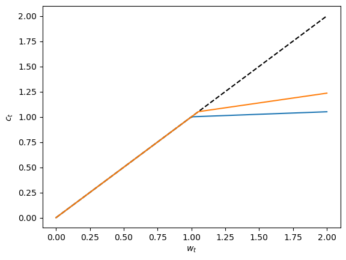
Even for big N, the evaluated value of ∇ are stochastic, and always slightly inaccurate. In average, they are non-biased and the algorithm converges in expectation (it fluctuates around the maximum). This is called the stochastic gradient method.
Exercise 9 What are the values of \(N\) and \(\lambda\) which minimize the number of iterations before reaching the target zones (at 1%, 2%, etc…)? How many simulations periods does it correspond to? Would you say it is realistic that consumers learn from their own experience?
# in order to perform sensitivity analysis, let's wrap the code above in a funciton
# let's write a naive code
def train(λ=0.01, M=5000, N=1000):
v = v0.copy()
key = key0.copy()
values = []
guesses = []
for m in tqdm(range(M)):
key, _ = random.split(key)
f, df = fobj_jitted(v, key, N=N)
# print(f)
guesses.append(v)
values.append(f)
# update guess
v = v+λ*df # maximize with gradient ascent
return guesses, values# compare some learning rates for high numbers of N i.e. precise jacobians
guesses_0001, values_0001 = train(λ=0.001)
guesses_001, values_001 = train(λ=0.01)
guesses_01, values_01 = train(λ=0.1)# we can also represent the convergence on a heatmap
import matplotlib.pyplot as plt
import numpy as np
levels=[0, 0.01, 0.05, 0.1]
plt.contourf(
np.array(cvals_loss.T),
origin='lower',
extent=(t0_vec.min(), t0_vec.max(), t1_vec.min(), t1_vec.max()),
# extent=(t1_vec.min(), t1_vec.max(), t0_vec.min(), t0_vec.max()),
# levels=np.linspace(0.,0.5,20)
levels=levels
# levels=[-3,-2,-1.0,-0.5,-0.4,-0.3,-0.2,-0.1, -0.05]
)
# plt.plot([e[1] for e in guesses], [e[0] for e in guesses], '.')
H = 100
plt.plot([e[0] for e in guesses_0001[:H]], [e[1] for e in guesses_0001[:H]], '.', label='lambda=0.0001')
plt.plot([e[0] for e in guesses_001[:H]], [e[1] for e in guesses_001[:H]], '.', label='lambda=0.001')
plt.plot([e[0] for e in guesses_01[:H]], [e[1] for e in guesses_01[:H]], '.', label='lambda=0.01')
plt.xlim(0, 1.5)
plt.ylim(0, 0.2)
plt.legend(loc='lower left')
# plt.colorbar()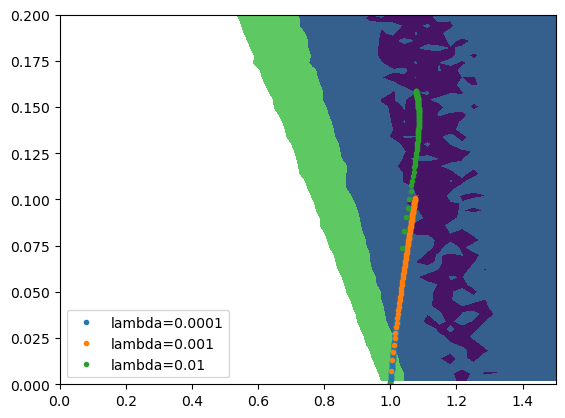
# we can also visualize the training by looking at objective function
# not that seemingly high asymptotic volatility comes from the log x-range
cm = cvals.max()
fig,ax = plt.subplots()
ax.plot(values_0001)
ax.plot(values_001)
ax.plot(values_01)
ax.hlines(y=cm, xmin=plt.xlim()[0], xmax=plt.xlim()[1], label="optimal", color='black')
ax.hlines(y=cm*0.99, xmin=plt.xlim()[0], xmax=plt.xlim()[1], label="optimal", color='black', linestyle='dashed')
ax.hlines(y=cm*0.98, xmin=plt.xlim()[0], xmax=plt.xlim()[1], label="optimal", color='black', linestyle='dashed')
ax.hlines(y=cm*0.97, xmin=plt.xlim()[0], xmax=plt.xlim()[1], label="optimal", color='black', linestyle='dashed')
ax.set_xscale('log')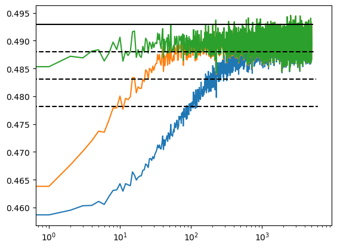
# now let' s reduce the number of draws for the calculation of Xi
guesses_10_0001, values_10_0001 = train(λ=0.001, N=100)
guesses_10_001, values_10_001 = train(λ=0.01, N=100)
guesses_10_01, values_10_01 = train(λ=0.1, N=100)
guesses_10_1, values_10_1 = train(λ=1, N=100)# we can see that the objective has much more volatility
fig,ax = plt.subplots()
ax.plot(values_10_0001, label='lambda=0.001')
ax.plot(values_10_001, label='lambda=0.01')
ax.plot(values_10_01, label='lambda=0.1')
ax.plot(values_10_1, label='lambda=1')
ax.hlines(y=cm, xmin=plt.xlim()[0], xmax=plt.xlim()[1], color='black')
ax.hlines(y=cm*0.99, xmin=plt.xlim()[0], xmax=plt.xlim()[1], color='black', linestyle='dashed')
ax.hlines(y=cm*0.98, xmin=plt.xlim()[0], xmax=plt.xlim()[1], color='black', linestyle='dashed')
ax.hlines(y=cm*0.97, xmin=plt.xlim()[0], xmax=plt.xlim()[1], color='black', linestyle='dashed')
plt.legend(loc='upper left')
ax.set_xscale('log')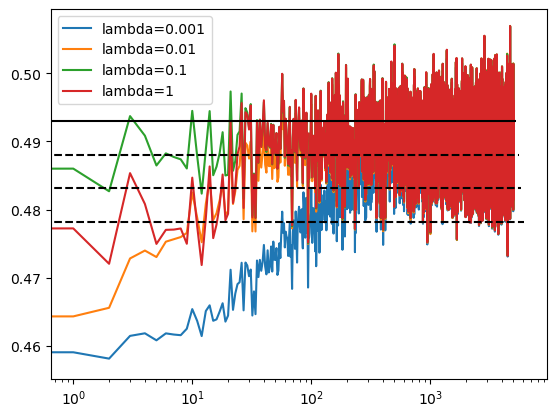
# but the path for the guesses, look very similar to the one obtained with N=10000
import matplotlib.pyplot as plt
import numpy as np
levels=[0, 0.01, 0.05, 0.1]
plt.contourf(
np.array(cvals_loss.T),
origin='lower',
extent=(t0_vec.min(), t0_vec.max(), t1_vec.min(), t1_vec.max()),
# extent=(t1_vec.min(), t1_vec.max(), t0_vec.min(), t0_vec.max()),
# levels=np.linspace(0.,0.5,20)
levels=levels
# levels=[-3,-2,-1.0,-0.5,-0.4,-0.3,-0.2,-0.1, -0.05]
)
# plt.plot([e[1] for e in guesses], [e[0] for e in guesses], '.')
H = 100
plt.plot([e[0] for e in guesses_10_0001[:H]], [e[1] for e in guesses_10_0001[:H]], '.', label='lambda=0.0001')
plt.plot([e[0] for e in guesses_10_001[:H]], [e[1] for e in guesses_10_001[:H]], '.', label='lambda=0.001')
plt.plot([e[0] for e in guesses_10_01[:H]], [e[1] for e in guesses_10_01[:H]], '.', label='lambda=0.01')
plt.plot([e[0] for e in guesses_10_1[:H]], [e[1] for e in guesses_10_01[:H]], '.', label='lambda=0.1')
plt.xlim(0, 1.5)
plt.ylim(0, 0.2)
plt.legend(loc='lower left')
plt.title("Lifetime Reward: Convergence of Gradient Ascent (N=100)")Text(0.5, 1.0, 'Lifetime Reward: Convergence of Gradient Ascent (N=100)')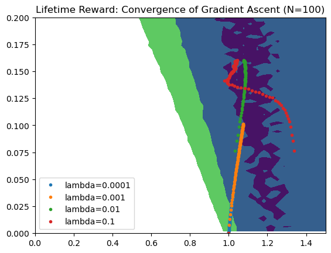
# compare with lambda=0.01, the paths obtained with N=10000 and N=100
plt.plot([e[0] for e in guesses_01[:H]], [e[1] for e in guesses_10_01[:H]], '.', color='C0', label="N=10000")
plt.plot([e[0] for e in guesses_10_01[:H]], [e[1] for e in guesses_10_01[:H]], 'x', color='C1', label="N=10")
plt.xlabel('$\\theta_0$')
plt.ylabel('$\\theta_1$')Text(0, 0.5, '$\\theta_1$')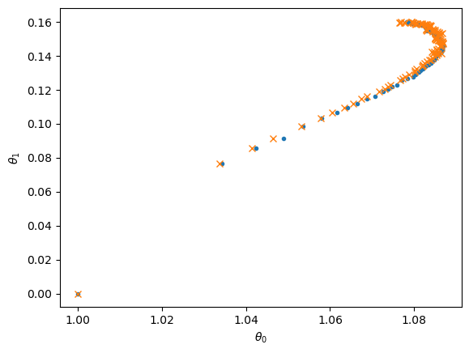
# Conclusion, to learn the optimal decision rule, it is not needed to compute the objective very precisely
# as long as its gradient is computed with sufficient precision to learn the optimal decision rule.
# For the learning rate, lambda=0.1 is the best values among those we have tested. Of course, this can be improved...